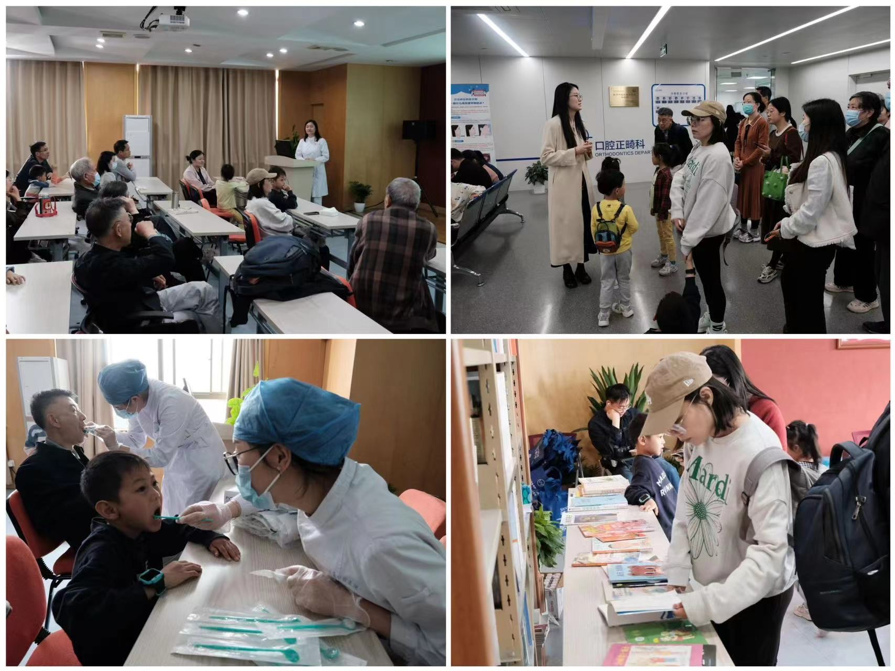
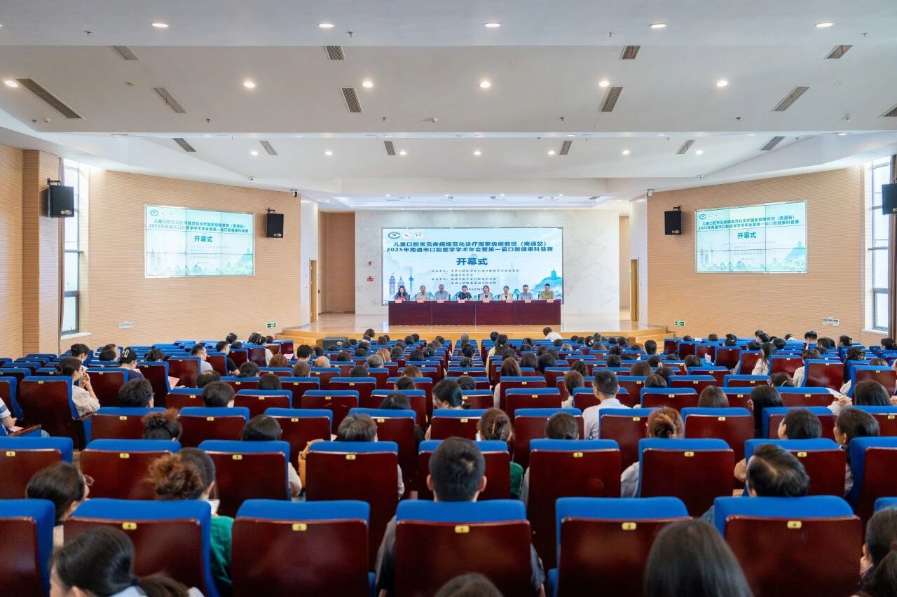
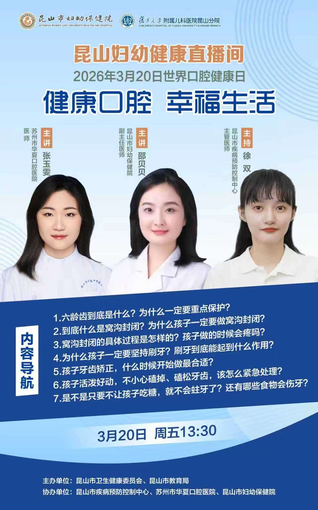
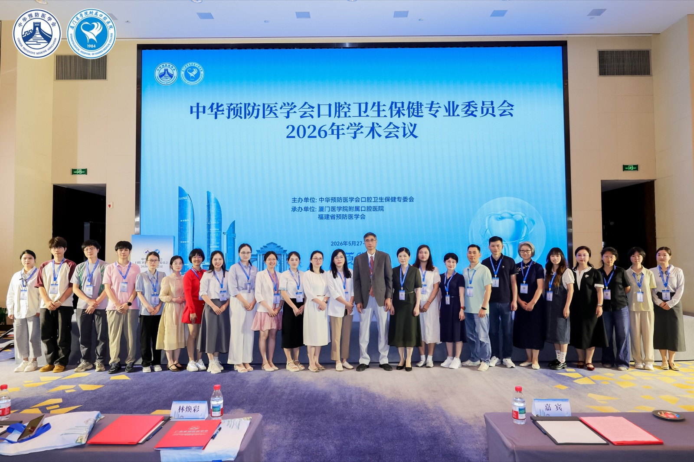

Education
Master of Medicine
Oral Medicine — Preventive Dentistry Track
Sun Yat-sen University
ARWU #65
U.S. News #74
QS Dentistry #91
GPA: 86.8/100 | Supervisor: Prof. Huancai Lin
Bachelor of Medicine
Stomatology
Wannan Medical University
GPA: 90/100
Research Experience
Suzhou Pediatric Oral Health Epidemiological Survey
Project Implementer | Suzhou Municipal Health Commission Project
Suzhou, Jiangsu | 2024.03 – Present
- Conducted standardized on-site clinical examinations to establish comprehensive oral health baselines, facilitating the systematic tracking of disease incidence and subsequent health trends.
- Collected, validated, and cleaned large-scale population data to investigate knowledge, attitudes, and behaviors concerning oral health among children and parents, assessing utilization of healthcare and service demands.
- Contributed to the preparation of the final municipal report by conducting core statistical analyses and data synthesis, thereby supporting the evaluation of regional oral health programs.
PGA-Mediated Biomimetic Mineralization of Type I Collagen
Graduate Student | Master's Project, SYSU
Guangzhou, Guangdong | 2020.09 – 2023.06
- Synthesized poly(γ-glutamic acid)-stabilized amorphous calcium phosphate (PGA-ACP) solutions with varying molecular weights and concentrations, and extracted rat tail tendon collagen to fabricate 2D thin-layer matrices and 3D type I collagen scaffolds.
- Systematically evaluated the regulatory effects of PGA parameters on solution stability via dynamic monitoring of optical density, pH, particle size, and zeta potential, validating PGA as an effective non-collagenous protein (NCP) analog for inducing hierarchical intrafibrillar mineralization that mimics natural hard tissue.
- Employed a comprehensive characterization suite—including TEM, SEM, XRD, FT-IR, and TGA—to elucidate the micro-morphology, crystalline characteristics, chemical functional groups, and hydroxyapatite content of the mineralized scaffolds.
Publications
[1]
Effect of the stability of the poly(gamma-glutamic acid)-ACP dispersion system on biomimetic mineralization of type I collagen
Biomaterials Science, 2025
[2]
Biomineralization-Inspired Anti-Caries Strategy Based on Multifunctional Nanogels as Mineral Feedstock Carriers
International Journal of Nanomedicine, 2023
[3]
Survey on oral health status of second-grade primary school students in Suzhou City
Stomatology, 2025
[4]
Inter-kingdom interactions and environmental influences on the oral microbiome in severe early childhood caries
Microbiology Spectrum, 2025
[5]
Investigation of a novel biofilm model close to the original oral microbiome
Applied Microbiology and Biotechnology, 2024
[6]
Metabolic differences of the oral microbiome related to dental caries — A pilot study
Archives of Oral Biology, 2022
[7]
Oral Mycobiome Differences in Various Spatial Niches With and Without Severe Early Childhood Caries
Frontiers in Pediatrics, 2021
Clinical Experience
Pediatric Dentist
Suzhou Huaxia Stomatological Hospital
- Complex Case Management: Independently managed pediatric dental cases of moderate to high complexity, applying advanced behavior management and minimally invasive techniques to achieve clinical outcomes of high quality.
- Public Health & Prevention: Co-launched the offline "Journey to Healthy Teeth" outreach program with Suzhou Library, produced the online "Childhood Dental Trauma" video column of the hospital, and participated as a speaker in the "World Oral Health Day" live stream to enhance the preventive awareness of the public.
Resident Dentist
Hospital of Stomatology, Sun Yat-sen University
- Biomimetic Mineralization: Constructed and comprehensively characterized a biomimetic mineralization system mediated by poly-glutamic acid (PGA), achieving the initial validation of the capacity of the system to induce hierarchical intrafibrillar mineralization of type I collagen.
- Standardized Residency Training: Completed rigorous clinical rotations across core departments (Endodontics, Periodontics, Pediatrics, Oral Surgery, and Prosthodontics) at a top-tier tertiary hospital, cultivating strong skills in differential diagnosis and evidence-based clinical reasoning.
Dental Intern
Suzhou Stomatological Hospital
- Multidisciplinary Rotations: Completed comprehensive clinical rotations, assisting senior consultants with the diagnosis and treatment of common oral diseases to establish a comprehensive understanding of general dentistry.
- Protocol Standardization: Adhered strictly to the principles of aseptic operation and the standardized documentation of medical records, building a disciplined professional foundation within a clinical environment of high standards.
Honors & Awards
Suzhou Huaxia Stomatological Hospital
Outstanding Employee2025
Outstanding Employee2024
Sun Yat-sen University
Third-Class Academic Scholarship2023
Third-Class Academic Scholarship2022
Third-Class Academic Scholarship2021
National Academic Conference of the Preventive Dentistry Committee
Outstanding Poster Award2022
Suzhou Stomatological Hospital
Outstanding Intern Award2020
Second Prize, Intern Case Report Competition2019
Wannan Medical University
Scholarship for Excellence in Youth League and Student Affairs2019
Outstanding Youth League Officer2018
Scholarship for Excellence in Youth League and Student Affairs2018
Scholarship for Excellence in Arts and Cultural Activities2018
Second-Class Academic Scholarship2018
Merit Student Award2018
Outstanding Student Union Officer2017
Second-Class Academic Scholarship2017
Second-Class Academic Scholarship2016
Professional & Research Skills
Biomaterials & Mineralization
Extraction of collagen from rat tail tendons, fabrication of 2D and 3D collagen scaffolds, and biomimetic mineralization; comprehensive characterization of materials via XRD, FTIR, TG/DTG, and EDS.
Microscopy & Imaging
High-resolution Scanning and Transmission Electron Microscopy (SEM/TEM) and Selected Area Electron Diffraction (SAED) for advanced analysis of microstructures and crystallography.
Clinical & Epidemiology
Diagnosis in pediatric dentistry and advanced management of behavior; comprehensive execution of large-scale oral epidemiological surveys, encompassing research design, data cleaning, and advanced biostatistical modeling.
Outreach & Activities

OutreachJourney to Healthy Teeth — World Book Day
April 23, 2024
Co-organized with the Suzhou Library for World Book Day, this event invited families for a science lecture, hospital tour, oral health examinations, and a book-borrowing session. I delivered a presentation on understanding teeth, common dental problems, and daily oral care, demonstrating proper brushing and flossing techniques, followed by an interactive Q&A. The hospital's dentists also provided comprehensive oral health checkups with one-on-one guidance and personalized treatment recommendations.
Video
Childhood Dental Trauma: How to Manage Tooth Fractures
December 18, 2024
Produced an educational video in which I shared a clinical case of coronal pulpotomy and fragment reattachment for a young permanent tooth with a complicated crown fracture, providing parents and caregivers with practical guidance on managing pediatric dental emergencies.

ConferenceNational Continuing Education Program on Pediatric Oral Disease Management
June 18, 2025
Participated in a national continuing education program organized by the Chinese Stomatological Association, focusing on standardized diagnosis and treatment of common pediatric oral diseases. The training provided opportunities to exchange insights with pediatric dental professionals on clinical standards, recent advances, and emerging needs, supporting the delivery of safer and more effective care for children.

OutreachWorld Oral Health Day — Live Stream
March 20, 2026
Invited as a speaker for the World Oral Health Day live stream organized by the Kunshan Municipal Health Commission and Kunshan Municipal Education Bureau, with the Kunshan CDC, Suzhou Huaxia Stomatological Hospital, and Kunshan Maternal and Child Health Hospital. I presented on key pediatric oral health topics including pit-and-fissure sealants, proper brushing, orthodontic timing, dental trauma management, and dietary advice for caries prevention.

Conference2026 Academic Conference on Oral Hygiene and Health Care
May 28, 2026
Attended the 2026 Academic Conference of the Oral Hygiene and Health Care Professional Committee of the Chinese Preventive Medicine Association to engage with emerging concepts and technologies in oral health management, learn about academic frontiers in the field, review community oral health care cases, and explore new technologies and methods for clinical oral research.
 Outreach
Outreach
Little Dentist — Oral Health Education Program
August 09, 2026
Served as the keynote speaker for the Little Dentist oral health education program, providing children with foundational knowledge of oral health care, including tooth development, preventive dentistry, and proper oral hygiene practices. Through structured presentations and interactive activities, I facilitated children’s engagement in evidence-based dental education and promoted lifelong oral health awareness.